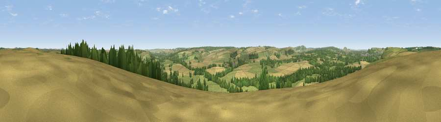

Viewpoint near Heytesbury
#17640 in England · top 27% of its area beats it · near HeytesburyThe view, rendered

A 360° render of this exact spot computed from the terrain model, tree cover and land cover — summer colours, afternoon light, calibrated against photographs of famous viewpoints. Real trees, hedges and buildings will differ in detail.
The panorama
Grey silhouette: terrain skyline in each direction (720 bearings, Earth curvature and refraction included). Dashed green: skyline with trees (+15 m) and buildings (+8 m) as obstacles. Blue strip: how far the ground is visible on each bearing.
Where the view opens
Wedge length = distance to the farthest visible ground on that bearing (vegetation-aware). Rings at 10, 25 and 50 km.
What fills the view
46% grassland · 32% cropland · 21% woodland · 1% built-up
Angular shares of the visible panorama (visual magnitude), not map area. Landscape diversity 0.48 (0–1 Shannon).
Key numbers
More beautiful places nearby
The staircase of upgrades: each row has a higher view potential than everything closer. Driving times are estimates from straight-line distance, calibrated against real road routing — check an actual route before setting out.
| Place | Direction | Drive | Score |
|---|---|---|---|
| Viewpoint near Norton Bavant | NW · 1 km | ~4 min | 58.0 |
| Arn Hill Down | NW · 5 km | ~12 min | 61.9 |
| Viewpoint near Upton Scudamore | NW · 7 km | ~15 min | 65.8 |
| Viewpoint near Upton Scudamore | NW · 7 km | ~15 min | 67.0 |
| Viewpoint near Westbury | NNW · 8 km | ~17 min | 71.3 |
| Cley Hill | WNW · 8 km | ~17 min | 76.8 |
| Viewpoint near Berwick St John | S · 22 km | ~37 min | 78.2 |
| Beacon Batch | WNW · 46 km | ~66 min | 79.4 |
51.18774, -2.11621 · source: screening · position refined by local search. Computed location — check access rights before visiting.